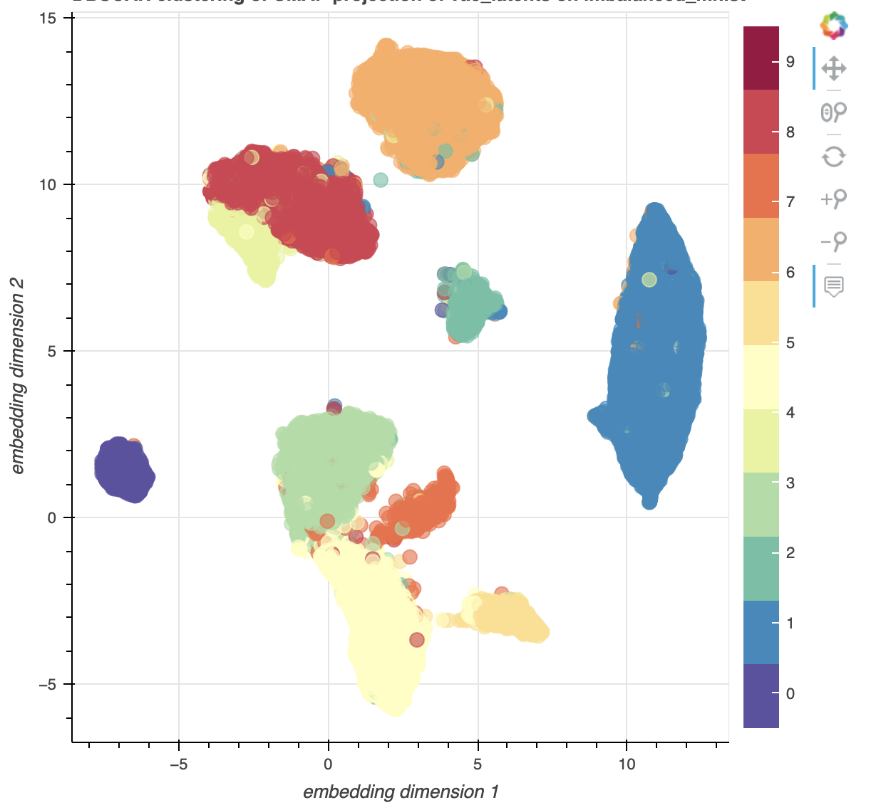
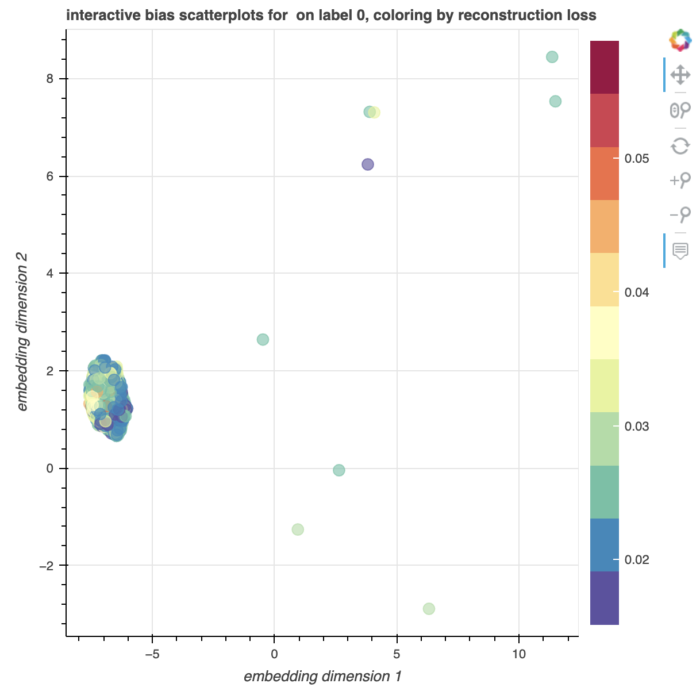

Class Distribuition
This plot can help you gain a better understanding about the distribuition of your data. Such as which classes are under/over-represented.
Label Distribuition

Feature Clusters
These plots cluster data points based on their extracted feature.
| Colored by feature | Colored by label |
|---|---|
 |
 |
Isolated Visualization Per Class

Features Of Class